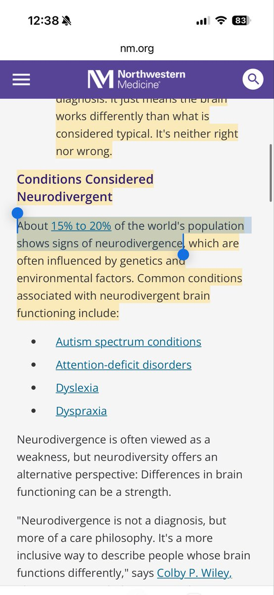

Aoi M
@aoim33
RT @boiledwater: 偏见源于无知。
很多歧视神经多样性的人，其实自己也不是完全的神经典型性人士。
只是他们被驯化得更擅长伪装“正常”，也不了解自己那份痛苦源于何方。
（按照目前研究，公认约15–20%的人口属于神经多样性群体，我想随着去污名化，以后比例还会更…

Jess
@boiledwater
偏见源于无知。
很多歧视神经多样性的人，其实自己也不是完全的神经典型性人士。
只是他们被驯化得更擅长伪装“正常”，也不了解自己那份痛苦源于何方。
（按照目前研究，公认约15–20%的人口属于神经多样性群体，我想随着去污名化，以后比例还会更高） https://t.co/th9KM2jjX9